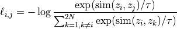

Deep learning for NeuroImaging in Python.
Note
This page is a reference documentation. It only explains the class signature, and not how to use it. Please refer to the gallery for the big picture.
- class nidl.estimators.ssl.simclr.SimCLR(encoder: Module, hidden_dims: Sequence[str], lr: float, temperature: float, weight_decay: float, random_state: int | None = None, **kwargs)[source]¶
Bases:
TransformerMixin,BaseEstimatorSimCLR [R12].
SimCLR is a contrastive learning framework for self-supervised representation learning. The key idea is to learn useful features without labels by making different augmented views of the same image close in a representation space, while pushing apart representations of different images. Once trained, the encoder can be reused for downstream tasks such as classification or regression.
The model consists of:
A base encoder f (e.g., a CNN), which extracts representation vectors.
A projection head g, which maps representations into a space where the contrastive objective is applied.
During training, two augmented versions of each input x are encoded into (z_i, z_j). The objective is to maximize their similarity while minimizing similarity to all other samples in the batch. This is achieved with the InfoNCE loss [R13], [R14]:

Similarity is measured with cosine similarity. The temperature
 controls the sharpness of the distribution (refer to [R15] for
more details).
After training, the projection head g is discarded, and the encoder f
serves as a pretrained feature extractor. This is because f provides
representations that transfer better to downstream tasks than those from
g.
controls the sharpness of the distribution (refer to [R15] for
more details).
After training, the projection head g is discarded, and the encoder f
serves as a pretrained feature extractor. This is because f provides
representations that transfer better to downstream tasks than those from
g.- Parameters:
encoder : nn.Module
the encoder f. It must store the size of the encoded one-dimensional feature vector in a latent_size parameter.
hidden_dims : list of str
the projector g with an MLP architecture.
lr : float
the learning rate.
temperature : float
the SimCLR loss temperature parameter.
weight_decay : float
the Adam optimizer weight decay parameter.
max_epochs : int, default=None
optionaly, use a CosineAnnealingLR scheduler.
random_state : int, default=None
setting a seed for reproducibility.
kwargs : dict
Trainer parameters.
References
[R12] (1,2)Ting Chen, Simon Kornblith, Mohammad Norouzi, Geoffrey Hinton, “A Simple Framework for Contrastive Learning of Visual Representations”, ICML 2020.
[R13] (1,2)Aaron van den Oord, Yazhe Li, Oriol Vinyals, “Representation Learning with Contrastive Predictive Coding”, arXiv 2018.
Attributes
f
a
Modulecontaining the encoder.g
a
Modulecontaining the projection head.- all_gather_and_flatten(tensor: Tensor, **kwargs)[source]¶
Gathers the tensor from all devices and flattens batch dimension.
This is useful when gathering tensors without adding extra dimensions. It handles some edge cases, such as when using a single GPU.
- Parameters:
tensor : torch.Tensor
The tensor to gather.
**kwargs : dict
Additional keyword arguments for self.all_gather.
- Returns:
tensor : torch.Tensor
The gathered and flattened tensor.
- configure_optimizers()[source]¶
Declare a
AdamWoptimizer and, optionally aCosineAnnealingLRlearning rate scheduler ifmax_epochsis set.
- training_step(batch: tuple[Tensor, Tensor], batch_idx: int, dataloader_idx: int | None = 0)[source]¶
Perform one training step and computes training loss.
- Parameters:
batch : Any
A batch of data that has been generated from train_dataloader. It should be a pair of torch.Tensor (V1, V2) where V1 and V2 are the two views of the same sample. They must have equal first dimensions.
batch_idx : int
The index of the current batch (ignored).
dataloader_idx : int, default=0
The index of the dataloader (ignored).
- Returns:
loss : Tensor
Training loss computed on this batch of data.
- transform_step(batch: Tensor, batch_idx: int, dataloader_idx: int | None = 0)[source]¶
Encode the input data into the latent space.
Importantly, we do not apply the projection head here since it is not part of the final model at inference time (only used for training).
- Parameters:
batch : torch.Tensor
A batch of data that has been generated from test_dataloader. This is given as is to the encoder.
batch_idx : int
The index of the current batch (ignored).
dataloader_idx : int, default=0
The index of the dataloader (ignored).
- Returns:
features : torch.Tensor
The encoded features returned by the encoder.
- validation_step(batch: tuple[Tensor, Tensor], batch_idx: int, dataloader_idx: int | None = 0)[source]¶
Perform one validation step and computes validation loss.
- Parameters:
batch : Any
A batch of data that has been generated from val_dataloader. It should be a pair of torch.Tensor (V1, V2).
batch_idx : int
The index of the current batch (ignored).
dataloader_idx : int, default=0
The index of the dataloader (ignored).
Examples¶


Follow us